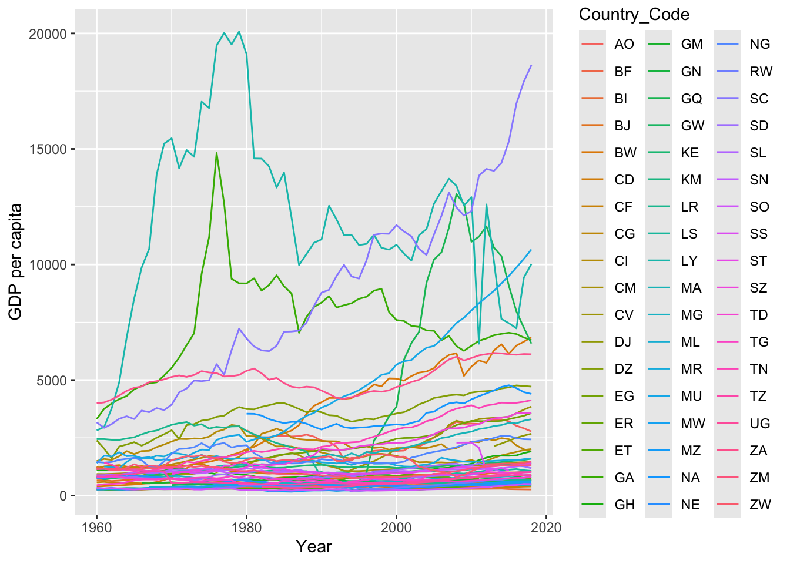

Code
library(tidyverse)
library(countrycode)
library(WDI)
library(magick)
library(tidyverse)
library(ggmap)
library(maps)
library(mapdata)
library(magrittr)
library(gganimate)
library(viridis)library(tidyverse)
library(countrycode)
library(WDI)
library(magick)
library(tidyverse)
library(ggmap)
library(maps)
library(mapdata)
library(magrittr)
library(gganimate)
library(viridis)We also need to fix some of the names slightly
countries = countrycode::codelist_panel
africa_countries = countries %>%
filter(continent == 'Africa') %>%
select(country.name.en, iso2c) %>%
unique.data.frame() %>%
rename(Country_Name = country.name.en,
Country_Code = iso2c) %>%
mutate(Country_Name = if_else(Country_Name == "Congo - Brazzaville", 'Republic of the Congo', Country_Name),
Country_Name = if_else(Country_Name == "Congo - Kinshasa",'Democratic Republic of the Congo', Country_Name),
Country_Name = if_else(Country_Name == "Côte d'Ivoire",'Ivory Coast', Country_Name),
Country_Name = if_else(Country_Name == "Réunion",'Reunion', Country_Name),
Country_Name = if_else(Country_Name == "St. Helena",'Saint Helena', Country_Name),
Country_Name = if_else(Country_Name == "São Tomé & Príncipe",'Sao Tome and Principe', Country_Name))africa_gdp = WDI(indicator='NY.GDP.PCAP.KD',
country=africa_countries$Country_Code,
start=1960,
end=2018) %>%
rename(Country_Code = iso2c,
GDP = NY.GDP.PCAP.KD) %>%
select(Country_Code, GDP, year)Let’s look at the GDP as a function of time
ggplot(africa_gdp, aes(year, GDP, color=Country_Code)) + geom_line() +
xlab('Year') + ylab('GDP per capita')
Lets get the map of africa.
Join it all together
africa = africa_map %>% left_join(africa_countries) %>% left_join(africa_gdp)p = africa %>%
ggplot(aes(x = long,
y = lat,
group = group,
fill = log10(GDP))) +
coord_fixed(1.3) +
geom_polygon() +
theme_minimal() +
scale_fill_viridis() +
transition_time(year) +
labs(title = 'Year: {frame_time}')
anim <- animate(p)
anim_save("africa.gif", animation = anim)
# for(year in unique(sort(africa$year))){
# p = africa %>% filter(year == year) %>%
# ggplot(aes(x = long, y = lat, group = group, fill = log10(GDP))) +
# coord_fixed(1.3) +
# geom_polygon() +
# theme_minimal() +
# scale_fill_viridis()
# print(p)
# }